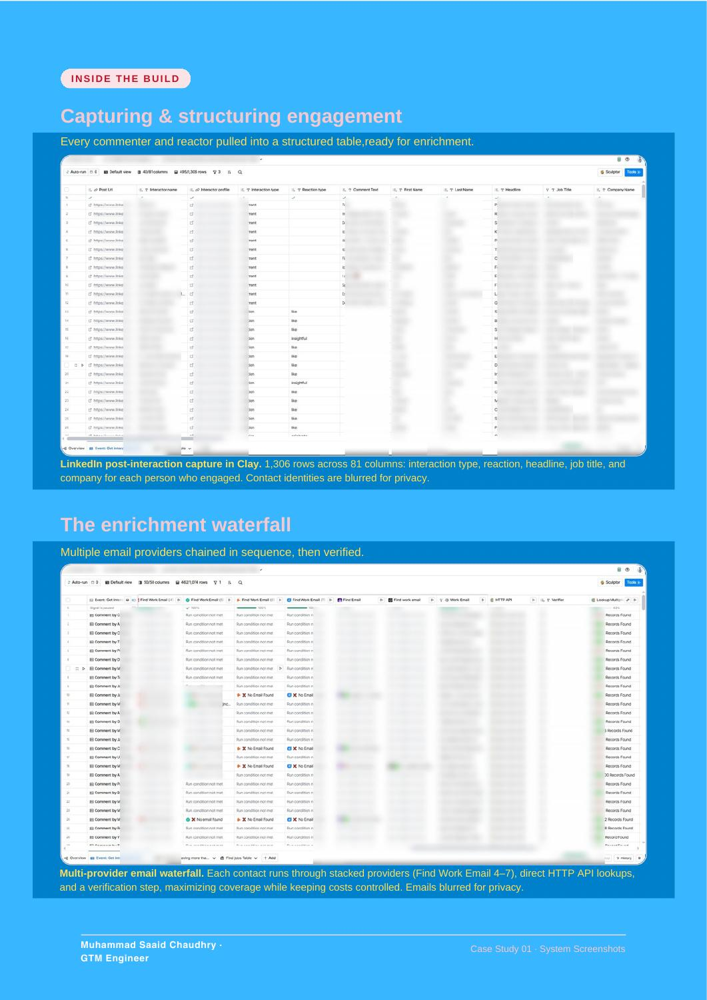

BUILD 01 / Clay · Lead enrichment
LinkedIn Engagement System
I built a Clay pipeline that captures post interactions, adds profile and company details, and finds verified email addresses for outreach.
THE RESULT1,306 interactions captured
Captured and enriched 1,306 LinkedIn interactions in a single run.
01 / THE PROBLEM
What needed fixing
Relevant prospects leave comments and reactions on LinkedIn, but turning those interactions into a usable contact list takes manual work.
02 / THE BUILD
What I built
I built a Clay pipeline that captures post interactions, adds profile and company details, and finds verified email addresses for outreach.
03 / HOW IT WORKS
- 01Capture comments and reactions
- 02Enrich profiles and companies
- 03Find and verify email addresses
- 04Prepare outreach-ready contacts
